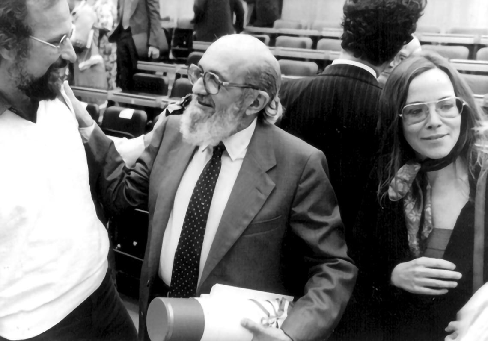
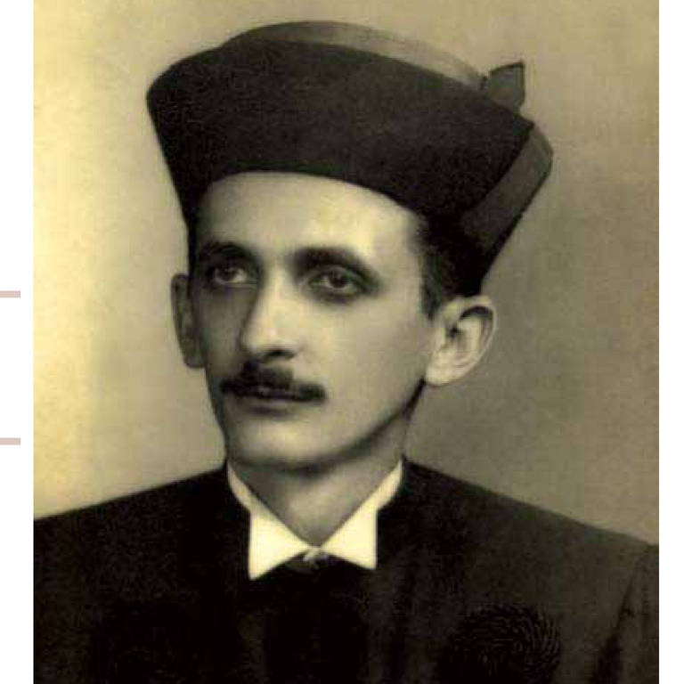

Introdução
Introdução
O educador Paulo Freire nasceu em 19 de setembro de 1921. Cresceu no Nordeste do Brasil onde suas experiências influenciaram profundamente sua vida profissional. A crise econômica mundial forçou Freire a conhecer a fome e a pobreza ainda jovem. Ele lembra no livro de Moacir Gadotti, Lendo Paulo Freire: “Eu não entendia nada por causa da minha fome. eu não era burro. Não foi falta de interesse. Minha condição social não me permitia ter uma educação. A experiência me mostrou mais uma vez a relação entre classe social e conhecimento”. Como Freire viveu entre famílias e trabalhadores rurais pobres, ele adquiriu uma compreensão profunda de suas vidas e dos efeitos da socioeconomia na educação.
Freire tornou-se professor de gramática ainda no ensino médio. Mesmo assim, sua intuição o empurrou para uma educação dialógica na qual ele se esforçou para entender as expectativas dos alunos. Ainda na Faculdade de Direito do Recife, Freire conheceu sua esposa, Elza Maia Costa de Oliveira, professora primária e uma força importante em sua vida. Eles se casaram em 1944, quando Freire tinha 23 anos e acabaram tendo cinco filhos, três dos quais se tornaram educadores. Gadotti afirma que foi Elza quem influenciou Freire a prosseguir intensamente seus estudos e o ajudou a elaborar seus métodos educacionais inovadores.
O arsenal do pensamento educacional de Freire começou a se manifestar com sua nomeação, em 1946, como diretor de Educação do SESI, instituição patronal criada para ajudar os trabalhadores e suas famílias. Aqui ele começou a ver mais desconexões entre as práticas educacionais elitistas e a vida real da classe trabalhadora. Gadotti diz: “Assim, o estudo da linguagem do povo foi o ponto de partida para o desenvolvimento de seu trabalho...”. Nesse período Freire também participou do Movimento pela Cultura Popular e apoiou o exercício ativo da democracia em palestras e em seu doutorado. tese, “A Educação Atual no Brasil”, escrita em 1959. Suas convicções lhe renderiam o título de “traidor”.
Frases de Paulo Freire
- "A Educação, qualquer que seja ela, é sempre uma teoria do conhecimento posta em prática."
- "A alegria não chega apenas no encontro do achado, mas faz parte do processo da busca. E ensinar e aprender não pode dar-se fora da procura, fora da boniteza e da alegria."
- "Se a educação sozinha não transforma a sociedade, sem ela tampouco a sociedade muda."
- "Ninguém educa ninguém, ninguém educa a si mesmo, os homens se educam entre si, mediatizados pelo mundo."
- "Ensinar não é transferir conhecimento, mas criar as possibilidades para a sua própria produção ou a sua construção."
- "Ninguém ignora tudo. Ninguém sabe tudo. Todos nós sabemos alguma coisa. Todos nós ignoramos alguma coisa. Por isso aprendemos sempre."